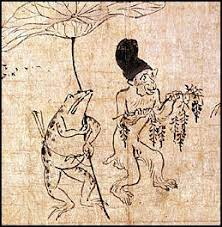
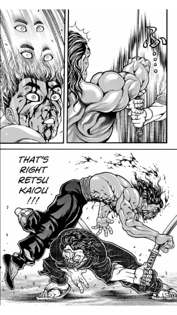
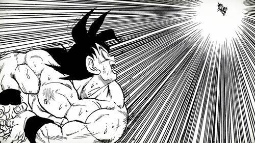
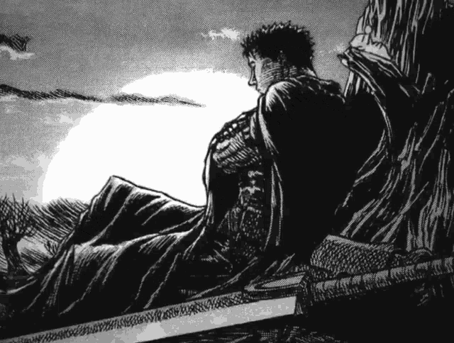

El origen del manga:
El nacimiento del manga se sitúa en 1814. Fue en esta época cuando Hokusai Katsushika realizó sus series de croquis de escenas de vida diaria, unos "dibujos caprichosos": "manga" en japonés.
En 1902, Kitazawa Rakuten publicó el primer manga moderno con cuatro viñetas por página y textos mecanografiados. Más tarde, los editores japoneses se inspiraron en las publicaciones periódicas anglosajonas y sacaron, en los años 1920, revistas mensuales que ponían de relieve los mangas,
destinados en un principio a los chicos (Shônen Club), a las chicas (Shôjo Club) y luego a los jóvenes adultos (Yônen Club). Pero la Segunda Guerra Mundial interrumpió la progresión del fenómeno manga.
Autores mas reconocidos actualmente:
Keisuke Itagaki-conocido por su obra Baki the grappler

Eiichiro Oda-Conocido por una de las mejores obras actualmente One Piece
Akira Toriyama-Su obra mas famosa es Dragon Ball

Hirohiko Araki-Jojo`s Bizarre adventure, que mas se puede decir, steel ball run es arte puro

Kento Miura-Berserk, otra obra maestra junto One piece y Jojo´s

Nosotros nos dedicamos a que estos y mas mangakas, junto a mas obras impresas para que tengan
mas reconocimiento, claramente venderemos copias sobre los tomos de sus respectivos mangas con
el derecho de autor y editorial, apenas vamos empezando asi que proximamente tendremos mejor
información y organización